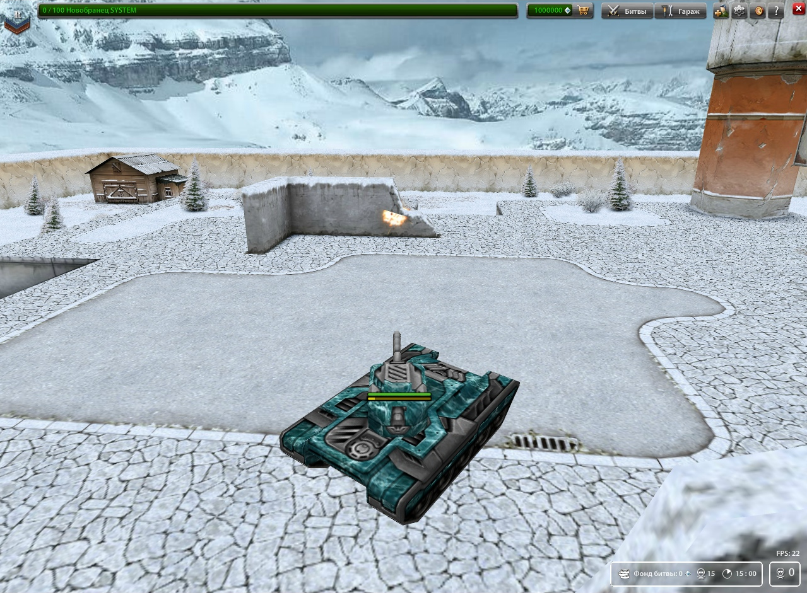
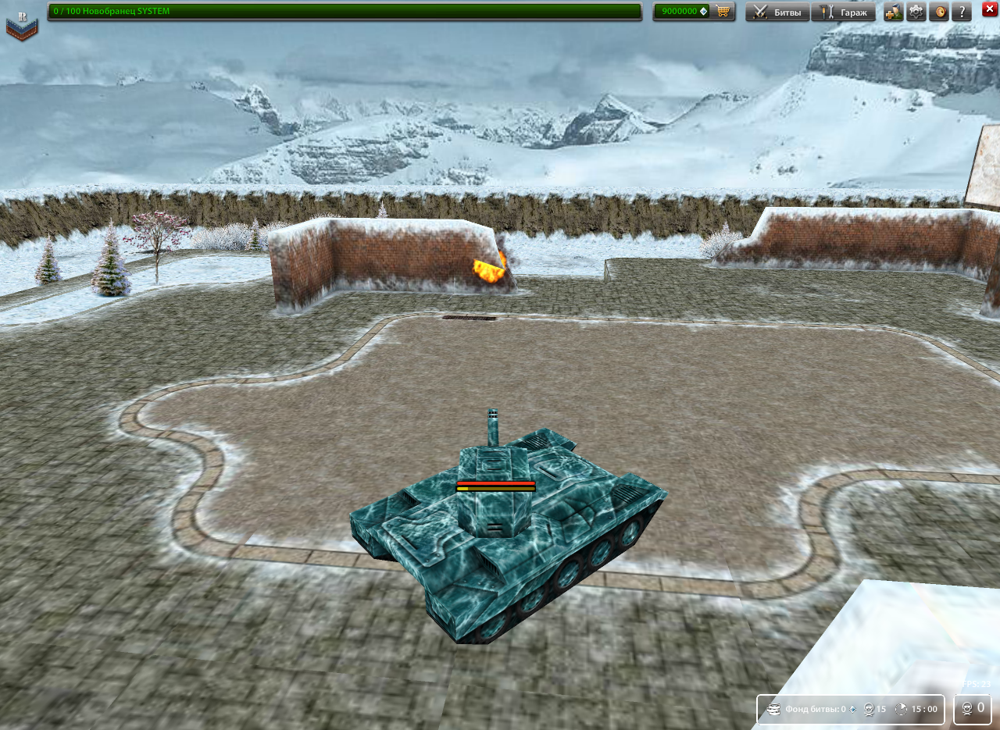

Паки ресурсов для игры.
Что это?
Первоначально игра имеет стандартные текстуры корпусов пушек припасов карт и т.д. Но при желании вы сможете изменить внешний вид Old Tanks на такой, какой захотите. Многие игроки Minecraft знают что на ту игру можно было ставить модиикации, изменяющие внешний вид (текстуры) предметов в игре. Old Tanks так же имеет такую возмoжность. Официально выпещены два ресурспака - стандартные текстуры и текстуры из старых танков онлайн (old-пак).
Стандартные текстуры игры:
Старые текстуры:
Установка текстур производится крайне просто. Под данной статьёй вы сможете скачать оба ресурспака. чтобы установить их, найдите в архиве папку с названием data и переместите ее в папку с клиентом. Подтверждаем замену файлов и папок. Все установка завершена.
Скачать Старые текстуры[140МB] Скачать Стандартные текстуры
[179МB]